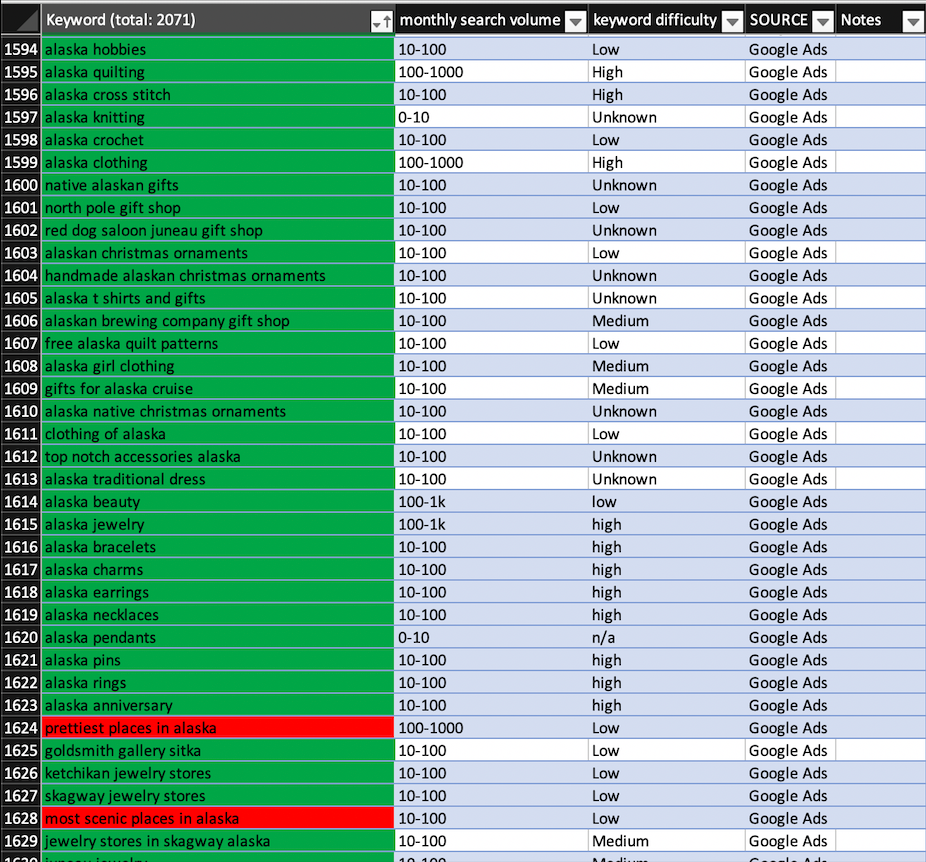
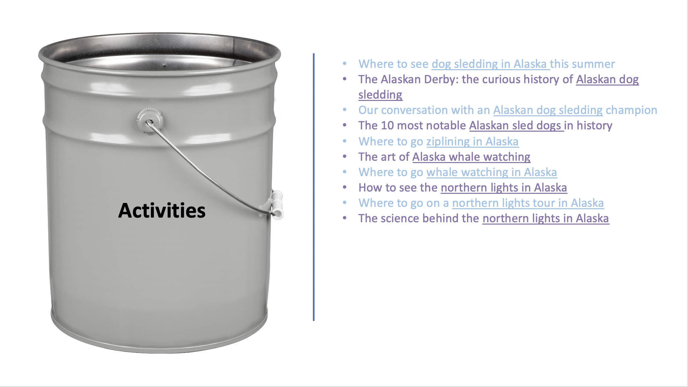
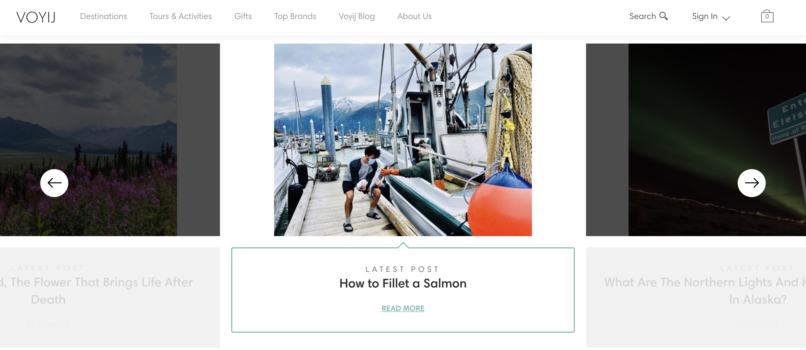

About
Voyij is an Alaskan travel service that offers two features: tour-booking and e-commerce. I was brought in to help Voyij build a content strategy and appear higher on Google Search Results Pages for different Search Queries.
Goals
- learn how to perform SEO
- build a content strategy
- see how I liked living in a tiny town in Alaska
Project: Perform a detailed SEO report for Voyij
What is SEO?
Factors of good SEO
Many things factor into what makes you do this. Some websites list hundreds in order of priority. Some of the biggest include how close the title of the webpage matches the search query, whether the search term appears in the page, and the quality of the content on the page
Where Voyij was good
to help Voyij be more successful, I conducted an SEO audit for them. That basically means I identified what things they are doing that are good for their SEO and what things they could be doing better with specific recommendations
Where Voyij could improve
Content Strategy
led a brainstorm with colleagues for creating attractive blog headlines contain 5,500 keywords I had generated from research w/ Google Ads programs
possible subjects for the e-commerce side of things from brainstorm for SEO-friendly blog posts
this article was a part of my overarching content strategy. It utilizes the long-tail keyword “how to fillet a salmon,” which has X monthly views and is a low-Competition keyword. The query appears prominently in the text. In addition, I got to engage in some very hands-on and very Alaskan research to write it (with edits from the founder.
